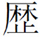
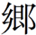
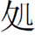
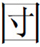
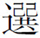
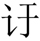

世界玩具史篇一本 二·五〇 一月五日
历代帝王疑年录一本 〇·八〇
太史公疑年考一本 〇·五〇
饮膳正要三本 一·〇〇 一月十日
ドストイエフスキイ全集（四）一本 二·五〇 一月十一日
チェーホフ全集（六）一本 二·五〇 一月十五日
支那山水畫史一本附図一帙 八·〇〇 一月十七日
顾端文公遗书四本 一六·八〇 一月二十日
癸巳存稿八本 二·八〇
玉台新咏二本 六·〇〇 一月二十日
怡兰堂丛书十本 八·〇〇
蠋城子一本 一七·〇〇
モリエール全集（三）一本 二·五〇 一月二十一日
ジイド全集（五）一本 二·五〇
美術百科全書（西洋篇）一本 九·〇〇 一月二十四日
不安と再建一本 二·〇〇
李汝珍受子谱二本 〇·七〇 一月二十八日
湖州丛书二十四本 七·〇〇
東方学報（东京、五）一本 四·〇〇
历代讳字谱二本 二·二〇 一月二十九日
冯刻六朝文絜二本 六·三〇 一月三十一日
句余土音补注五本 一·八〇
随山馆存稿四种七本 一·八〇
见笑集四本 〇·七〇六八·九〇〇
松隐集四本 二·一〇 二月一日
董若雨诗文集六本 二·六〇
南宋群贤小集五十八本 二八·〇〇
ドストイエフスキイ全集（五）一本 二·五〇 二月二日
版芸術（二月分）一本 〇·五〇
明清巍科姓氏录一本 〇·九〇 二月九日
シェストフ選集（卷一）一本 二·五〇 二月十日
貔子窩一本 四〇·〇〇 二月十六日
牧羊城一本 四二〇·〇〇
南山里一本 二〇·〇〇
清人杂剧初集一本[部] 西谛赠 二月十七日
文学古典の再認識一本 一·二〇 二月十八日
影谭刻太平广记六十本 三二·〇〇 二月二十日
馀冬序录二十本 九·八〇
梅村家藏稿八本 一三·〇〇
读书脞录二本 一·四〇
读书脞录续编一本 〇·七〇
名人生日表一本 〇·五〇
四六丛话八本 五·六〇
Art Review一本 三·〇〇 二月二十六日
三人一本 二·八〇一八九·五〇〇
版芸術（三月分）一本 〇·五〇 三月三日
医学焓草考一本 一·八〇 三月八日
ドストイエフスキイ全集（十五）一本 二·五〇 三月十日
チェーホフ全集一本 二·五〇
シェストフ選集（二）一本 二·五〇
アンドレ·ジイド全集（七）一本 二·五〇
欧洲文芸の

史的展望一本 一·五〇 三月十五日贯休画罗汉一本 〇·七〇 三月二十一日
陈氏香谱一本 一·〇〇
山樵书外纪一本 〇·四〇
开元天宝遗事一本 〇·九〇
碧声吟馆谈麈二本 一·二〇
来鹭草堂随笔一本 〇·五〇
隋书经籍志考证四本 四·〇〇 三月二十二日
两周金文辞大系图录五本 二〇·〇〇 三月二十三日
チェーホフの手帖一本 二·〇〇
版芸術（四月分）一本 〇·五〇 三月二十六日
楽浪彩箧塚一本 三五·〇〇八〇·〇〇〇
凡人绖一本 三·〇〇 四月四日
牧野氏植物随筆集一本 五·〇〇 四月五日
ドストイエフスキイ全集（十八）一本 二·五〇 四月七日
小林多喜二全集（一）一本 一·八〇 四月八日
山胡桃集一本 作者赠 四月十三日
元明散曲小史一本 二·〇〇
痀偻集一本 一·四〇
散曲丛刊二十八本 七·〇〇 四月十八日
日本玩具図篇一本 二·五〇 四月十九日
观沧阁魏齐造像记一本 一·六〇 四月二十日
ゴオゴリ研究一本 ナウカ社赠 四月二十二日
芥川之介全集六本 九·五〇 四月二十八日
版芸術（五月号）一本 〇·五〇 四月三十日三九·八〇〇
ドストイエフスキイ全集（七）一本 二·五〇 五月四日
自祭曲一本 作者寄赠 五月六日
橋田氏生理学（下）一本 〇·八〇
チェーホフ全集（九）一本 二·五〇 五月七日
春郊小景集一本 李桦寄赠 五月二十日
汉魏六朝砖文二本 二·三〇 五月二十三日
芥川之介全集（八）一本 一·五〇 五月二十四日
小林多喜二全集（二）一本 一·八〇 五月二十七日
房山雲居寺研究一本 四·五〇 五月二十八日
楽浪古瓦図譜一帖 五·〇〇 五月三十日二〇·九〇〇
版芸術（六月分）一本 〇·五〇 六月一日
人体寄生虫通説一本 〇·八〇 六月四日
二十五史补编三本 三六·〇〇 六月六日
中国哲学史二本 三·八〇
ドストイエフスキイ全集（十六）一本 二·五〇 六月八日
其藻版画集一本 〇·五〇 六月十日
西洋美術館めぐり（第一辑）一本 二一·〇〇 六月十八日
Die Literatur in der S.U.一本 寄赠 六月二十二日
ツルゲーネフ全集（七）一本 一·八〇
芥川之介全集（四）一本 一·五〇
青空集一本 作者寄赠 六月二十四日
比較解剖学一本 〇·八〇
東亜植物一本 〇·八〇
ジイド研究一本 一·五〇 六月二十五日
静かなるドン（一）一本 一·五〇
黄山十九景册一本 一·一〇
墨巢秘笈藏影（一及二）二本 三·四〇
金文续编二本 〇·九〇
マ·エン·芸術論一本 一·二〇 六月二十六日
小林多喜二全集（三）一本 一·八〇八一·六〇〇
章氏丛书续编四本 季巿赠 七月二日
版芸術（七月号）一本 〇·五〇 七月四日
ドストイエフスキイ全集（十八）一本 二·五〇 七月六日
チェーホフ全集（十）一本 二·五〇
静かなるドン（二）一本 一·五〇
静かなるドン（第一部）一本 一·三〇 七月九日
野菜博录三本 二·七〇 七月十三日
芥川之介全集（九）一本 一·五〇 七月二十六日
支那小説史一本 五·〇〇 七月三十日一七·五〇〇
版芸術（八月分）一本 〇·五〇 八月一日
南宋六十家集五十八本 一〇·〇〇 八月五日
わが漂泊一本 サイレン社寄赠 八月六日
支那小説史五部五本 同上
ドストイエフスキイ全集（别卷）一本 二·五〇
ウデゲ族の最後の者一本 一·五〇
小林多喜二書簡集一本 一·〇〇 八月七日
東方学報（東京、五ノ ）一本 四·〇〇 八月十日
）一本 四·〇〇 八月十日
モンテーニュ随想録（一及二）二本 一〇·〇〇 八月十三日

土玩具集（十）一本 〇·五〇 八月二十日土俗玩具集（一至五）五本 二·五〇
黑と白（再刊一至二）二本 一·〇〇
版芸術（九月分）一本 〇·五〇 八月二十七日
两周金文辞大系考释一函三本 八·〇〇 八月二十八日
芥川之介全集（十）一本 一·五〇 八月卅一日
汉代圹砖集录一本 静农寄赠四三·五〇〇
土俗玩具集（六）一本 〇·五〇 九月四日
白と黑（三）一本 〇·五〇
チェーホフ全集（十一）一本 二·五〇
植物集説（上）一本 五·〇〇
開かれた

女地一本 一·五〇 九月五日现代版画（十一）一本 出版社赠 九月九日
李桦版画集一本 作者赠一〇·〇〇〇
版芸術（十月分）一本 〇·五〇 十月三日
ゴリキイ等：文学評論 一·五〇 十月十日
现代版画（十二）一本 出版者赠 十月十二日
四部丛刊三编一部 豫约一三五·〇〇 十月十四日
尚书正义八本 豫约付讫
诗本义三本 同上
明史钞略三本 同上
昭德先生郡斋读书志八本 同上
隶释八本 同上
困学纪闻六本 同上
景德传灯录十本 同上
密庵稿四本 同上
近世錦絵世相史（一）一本 三·八〇 十月十七日
ジイド全集（十二）一本 二·五〇 十月十八日
わが毒舌一本 二·〇〇 十月二十五日
集

社会学原理一本 作者赠 十月二十七日え·びやん一本 二·五〇 十月二十八日
キェルケゴール選集（二）一本 二·五〇一五〇·三〇〇十月三十一日
版芸術（十一月分）一本 〇·六〇 十一月四日
チェーホフ全集（十二）一本 二·八〇 十一月六日
世界文芸大辞典（一）一本 五·五〇
越天楽一本 二·二〇 十一月八日
死魂灵图象一本 二五·〇〇
条件一本 一·七〇 十一月十七日
文化の擁護一本 一·一〇
大历诗略四本 二·四〇 十一月十九日
元人选元诗五种六本 六·四〇
明越中三不朽图赞一本 一·三〇 十一月二十一日
荆南萃古编二本 三·五〇
密韵楼丛书二十本 三五·〇〇
玩具叢書（七）一本 二·七〇 十一月二十二日
白と黑（四）一本 〇·六〇 十一月二十四日
キェルケゴール選集（一）一本 二·七〇 十一月二十五日
ゴリキイ文学論一本 一·一〇
百衲本史记十六本 一六·〇〇
老子严复评点一本 〇·五〇
甘粕氏芸術論一本 一·〇〇 十一月二十七日
森山氏文学論一本 一·〇〇
版芸術（十二月分）一本 〇·六〇
モンテーニュ随想録（三）一本 六·〇〇 十一月三十日
近世錦絵世相史（二）一本 四·〇〇一一三·一〇〇
猫町一本 〇·八〇 十二月四[五]日
第二の日一本 一·七〇 十二月七日
フロオベエル全集（二）一本 二·八〇
宋人画册一本 一·五〇
からす一本 二·〇〇 十二月十六日
向日葵の書一本 二·二〇
现代版画（十四）壹本 李桦寄赠 十二月十七日
木刻三人展览会纪念册一本 同上
土俗玩具集（七及八）二本 一·一〇
漱石全集（四）一本 一·七〇
二十五史五本人名索引一本 四七·〇〇 十二月二十一日
南阳汉画象拓片六十五幅 三〇·〇〇
The Works of H.Fabre五本 五〇·〇〇 十二月二十五日
キエルケゴール

集（三）一本 二·八〇The Works of H.Fabre六本 六〇·〇〇 十二月二十七日
漱石全集（八）一本 一·七〇 十二月二十八日
完訳ゴリキイ文学論一本 二·〇〇
Vater und Sohn一本 吴朗西赠
版芸術（明正）一本 〇·七〇 十二月二十九日
论语注疏解经二本 三·八〇 十二月三十日
昭明太子集二本 二·一〇
杜樊川集四本 三·五〇
大德本隋书二十本 豫约
大德本南史二十本 同上
大德本北史三十二本 同上
洪武本元史六十本 同上
礼记正义残本三本 豫约
吊伐录二本 同上
三辅黄图一本 同上
淳化秘阁法帖考正四本 同上
太平御览一百三十六本 豫约
小字录一本 同上
徐公钓矶文集二本 同上
窦氏联珠集一本 同上二一一·四〇〇
[1] 即《表》。童话，苏联班台莱耶夫著，鲁迅译文发表于《译文》月刊第二卷第一期（1935年3月），1935年上海生活书店出版单行本，为《译文丛书》之一。
[3] 《CLEOPATRA》 中译名《倾国倾城》。以古埃及女王克莱奥帕特拉故事为题材的故事片。美国派拉蒙影片公司1934年出品。
[4] 为编辑《中国新文学大系·小说二集》，从《新潮》中选取作品。
[5] 编《新文学大系》约 即赵家璧请鲁迅编选《中国新文学大系·小说二集》的出版合同。
[7] 即《坏孩子》及《暴躁人》。均发表于《译文》月刊第一卷第六期（1935年2月），题作《奇闻二则》。后均收入《坏孩子和别的奇闻》。
[9] 系约请鲁迅为《世界文库》撰稿，后鲁迅允为翻译果戈理的《死魂灵》。
[10] 为编《中国新文学大系·小说二集》，请沈雁冰代购有关小说作为资料。
[11] 指《译文》用稿。内有鲁迅所译《坏孩子》、《暴躁人》及沈雁冰所译苏联勃拉果夷作《莱蒙托夫》。
[12] 为编《集外集拾遗》，托宋紫佩将北平寓中所存《晨报副刊》、《京报副刊》、《莽原》周刊等寄沪，从中查录《集外集》未收的文章。
[13] 即《隐士》、《“招贴即扯”》。后均收入《且介亭杂文二集》。
[14] 传经堂 上海的一家旧书店。该店定期向读者发送出售书目。
[16] 《抵抗》 英文名《Sniper》，故事片，苏联1932年出品。
[17] 《春牛图》 历本画页。鲁迅寄徐懋庸用作《芒种》半月刊的封面图。
[18] 为编《中国新文学大系·小说二集》，从所借刊物中选取作品。
[19] 即《“骗月亮”》、《书的还魂和赶造》。前篇现编入《集外集拾遗补编》；后篇收入《且介亭杂文二集》。
[20] 《死魂灵》第一部译稿先连载于1935年生活书店出版的《世界文库》第一至第六册，次年由上海文化生活出版社出版单行本。
[21] 即《〈中国新文学大系〉小说二集序》。后收入《且介亭杂文二集》。
[22] 还生生美术公司稿费泉十 因《生生月刊》已退回《脸谱臆测》稿，故寄还预付稿费。按1934年12月25日收六元，此时还十元，二数当有一误。
[23] 即《论俗人应避雅人》。原题《论俗人须避雅人》。后收入《且介亭杂文》。
[26] 即《〈中国新文学大系〉小说二集序》，文末署“三月二日写讫”。
[27] 即《漫谈“漫画”》、《漫画而又漫画》。后均收入《且介亭杂文二集》。
[29] 即《内山完造作〈活中国的姿态〉序》。后收入《且介亭杂文二集》。
[32] 《美人心》 原名《Don Juan》，故事片，美国联美影片公司1934年出品。
[33] 《金银岛》 原名《Treasure》，故事片，美国米高梅影片公司1935年根据史蒂文生同名小说改编。
[34] “论坛” 即“文学论坛”，《文学》月刊的一个专栏。
[35] 即《非有复译不可》、《论讽刺》。后均收入《且介亭杂文二集》。
[37] 写给今村铁研的字幅为：“顽绝绝顽绝，以笑为生业。刚道黑如炭，谁知白似雪。笑煞婆娑儿，尽逐光影灭。若无八角眼，岂识四方月？铁研先生教正 鲁迅”。写给增田涉者为：“生来好苦吟，与天争意气。自谓李杜生，当趋下风避。而今吾老矣，无力收鼻涕。非惟不成文，抑且写错字。所南翁《锦钱馀笑》之一录应 增田同学仁兄雅属 鲁迅”。写给冯剑丞者未详。写给徐

者，其一为：“昔者所读书，皆已束高阁，只有自是经，今亦俱忘却。时乎歌一拍，不知是谁作？慎勿错听之，也且用不着。所南翁《锦钱馀笑》之一录应 伯先生雅属 鲁迅”。另一幅为：“金家香弄千轮鸣，扬雄秋室无俗声。李长吉句录应 伯先生属 亥年三月 鲁迅”。[38] 即《难解的性格》、《波斯勋章》、《阴谋》。《波斯勋章》当时未发表，余两篇发表于《译文》月刊第二卷第二期（1935年4月）。后均收入《坏孩子和别的奇闻》。
[41] 即《田军作〈八月的乡村〉序》。后收入《且介亭杂文二集》。
[42] 即《徐懋庸作〈打杂集〉序》。原题《〈打杂集〉序言》。稿于次日寄徐懋庸。后收入《且介亭杂文二集》。
[43] 《从“别字”说开去》 此稿次日寄曹聚仁。后收入《且介亭杂文二集》。
[44] “掂斤簸两”三则 “掂斤簸两”，《太白》半月刊上的小杂感专栏。“三则”，即《“某”字的第四义》、《“天生蛮性”》，另一则似为《死所》。现均编入《集外集拾遗补编》。
[45] 美术生活社 指美术生活杂志社，金有成等创办。1935年4月出版《美术生活》月刊。
[46] 《Baboona》 中译名《漫游兽国记》。故事片，美国福克斯影片公司1935年出品。
[47] 《死魂灵》插画十二张 俄国画家梭可罗夫作。后附印于《死魂灵百图》。
[48] 《珍珠岛》 原名《Pirate Treasure》，惊险片，美国新大陆影片公司1934年出品。
[49] 《海底寻金》 原名《Below the Sea》，故事片，美国哥伦比亚影片公司1933年出品。
[50] 新澙 即新潟县，在日本中部地区北侧近日本海。县府为新潟市。
[51] 即《人生识字胡涂始》、《“文人相轻”》。后均收入《且介亭杂文二集》。
[52] 所观电影为《米老鼠大全》，包括《可爱的小白兔》、《奇怪的企鹅》、《聪明的小鸡》等，均为迪斯尼制作的动画片。
 田诚一墓记》。后收入《且介亭杂文二集》。
田诚一墓记》。后收入《且介亭杂文二集》。[54] 即《中国的科学资料》、《“有不为斋”》。现均编入《集外集拾遗补编》。
[55] 即《在现代中国的孔夫子》。后收入《且介亭杂文二集》。
[56] 《荒岛历险记》 原名《Danger Island》，惊险片，美国影片公司1934年出品。
[57] 即《六朝小说和唐代传奇文有怎样的区别？》和《什么是“讽刺”？》。
[58] 《玩意世界》 原名《Babies In Toyland》，喜剧故事片，美国米高梅影片公司1934年出品。
[59] 即《再论“文人相轻”》、《六朝小说和唐代传奇文有怎样的区别？》、《什么是“讽刺”？》。后均收入《且介亭杂文二集》。
[60] 施茶 当时内山完造在内山书店门前设有施茶桶，免费向路人及读者提供茶水。鲁迅曾多次资助茶叶。
[61] 《兽国寻尸记》 原名《Savage Gold》，美国人摄制的关于南美洲亚马逊河的探险片。
[62] 鲁迅嘱黄源转托陈望道与现代书局联系，拟赎回被该局搁置的瞿秋白译稿《现实——马克思主义论文集》和《高尔基论文选集》，以及曹靖华的译稿《烟袋》和《第四十一》。
[63] 内山完造介绍日本作家长与善郎与鲁迅见面。后长与善郎在同年7月的日文《经济往来》上发表《与鲁迅会见的晚上》，对鲁迅的谈话做了不合原意的记载。参见360203（日）致增田涉信。
[66] 《恋歌》 小说，罗马尼亚索陀威奴著，鲁迅译文次日寄黄源，发表于《译文》月刊第二卷第六期（1935年8月），后收入《译丛补》。
[67] 即《〈全国木刻联合展览会专辑〉序》。原题《全国木刻联展专辑序》。后收入《且介亭杂文二集》。
[68] 即《文坛三户》、《从帮忙到扯淡》。十日寄黄源。后篇被禁，转由《杂文》月刊第三期（1935年9月）发表。后均收入《且介亭杂文二集》。
[69] 即《两种“黄帝子孙”》。现编入《集外集拾遗补编》。
[70] 即《“题未定”草（一——三）》。后收入《且介亭杂文二集》。
[71] 即《〈中国小说史略〉日译本序》。后收入《且介亭杂文二集》。
[72] 即《名人和名言》、《“靠天吃饭”》。后均收入《且介亭杂文二集》。
[73] 即《几乎无事的悲剧》、《三论“文人相轻”》。后均收入《且介亭杂文二集》。
[74] 中文拉丁化研究会 上海“左翼社会科学家联盟”领导下的文化团体。主要成员有叶籁士、方善境等。1934年8月成立，1935年3月为筹备出版书刊基金募捐。
[75] 绍兴修志委员会 编修绍兴县志的机构，王子馀任主任委员。该会于1937年至1939年间刊印绍兴县志资料，其中第一辑第十六册“人物列传”中收有《周树人》一篇，结尾注称：“采访，据自叙传略”。
[76] 《读〈呐喊〉图》 王钧初（胡蛮）作此图，以预祝鲁迅五十五寿辰。
[77] 《剿匪伟绩》 原名《Public Hero Number One》，故事片，美国米高梅影片公司1935年出品。
[78] サイレン社 即赛棱社。日本东京的一家出版社，三上于菟吉经办。该社出版过鲁迅的《中国小说史略》日译本。サイレン，英语Siren（汽笛）的日语音译。
[79] 即《〈俄罗斯的童话〉小引》。现编入《译文序跋集》。
[80] 瞿君译作稿二种 指瞿秋白所译《现实——马克思主义论文集》和《高尔基论文选集》。后均编入《海上述林》上卷。
[81] 《野性的呼声》 原名《Call of the Wild》，故事片，根据杰克·伦敦的同名小说改编。美国米高梅影片公司1935年出品。
[82] 即《四论“文人相轻”》、《五论“文人相轻”——明术》。次日寄黄源。后均收入《且介亭杂文二集》。
[83] 即《“题未定”草（五）》。后收入《且介亭杂文二集》。
[84] 即《论毛笔之类》、《逃名》。次日寄陈望道。后均收入《且介亭杂文二集》。
[87] 《大公报副刊》一纸 指1935年8月27日天津《大公报》副刊《小公园》第一七七八期，上刊有张庚评论《打杂集》的短文，鲁迅在副刊空白处写了对该文的评语。
[89] 即《什么是讽刺？》、《从帮忙到扯淡》。后均收入《且介亭杂文二集》。
[90] 即《村妇》。保加利亚伐佐夫作，鲁迅译文次日寄黄源，发表于《译文》终刊号（1935年9月），后收入《译丛补》。
[92] 《Non-Stop Revue》 中译名《万芳团》。
[93] 为讨论出版《译文丛书》事。其时生活书店已表示无意出版该丛书，席间鲁迅等与吴朗西、巴金商定，改由文化生活出版社出版。
[94] 为《译文》编辑易人事。生活书店宴请鲁迅等人，席间提出撤换黄源的《译文》编辑职务，被鲁迅拒绝。
[95] 为商议续订《译文》合同事。是日午后与沈雁冰、黎烈文、黄源共商《译文》事，鲁迅认为生活书店如续出《译文》，合同应与黄源签订。沈、黎均同意，鲁迅即请沈通知生活书店。
[98] 为调解《译文》事回复鲁迅。是日沈雁冰告诉鲁迅：郑振铎向生活书店提议，《译文》合同由黄源签字，但原稿需经鲁迅过目并签名。鲁迅表示同意。
[99] 二科美术展览会 由日本东京大型美术团体二科会举办的美展年会。1935年为第二十二届美展。
[100] 为通知《译文》停刊事。黎烈文和沈雁冰来告诉鲁迅：生活书店未接受郑振铎的提议，表示情愿停刊，允将已排的稿件汇齐出一终刊号。
[101] 《十字军英雄记》 原名《The Crusades》，故事片，美国派拉蒙影片公司1935年出品。
[102] 《南美风光》 应为《南美风月》，原名《Under the Moon》，故事片，美国福克斯影片公司1935年出品。
[104] 《黄金湖》 英文名《Golden Lake》，苏联拍摄的探险影片。
[105] 译文社丛书约 “译文社丛书”，即《译文丛书》。黄源编，鲁迅曾予支持并常为审稿。先后编印有《表》、《死魂灵》、《桃园》、《密尔格拉得》等。该丛书原由生活书店出版，后改由文化生活出版社出版。是晚译文社与文化生活出版社签订有关出版该丛书的合同。
[106] 《〈死魂灵〉序》 俄国内斯妥尔·珂德略来夫斯基作，鲁迅译文刊入1935年11月文化生活出版社出版的《死魂灵》。
[107] 《黑屋》 即《黑地狱》，原名《The Black Room》，恐怖片，美国哥伦比亚影片公司1935年出品。
[108] 朝日新闻支社 日本《朝日新闻》报社在上海所设的分社。是日邀饮为介绍日本诗人野口米次郎与鲁迅见面。席间野口提出挑衅性的问题，如把中国的“国防和政治”委托外国管理等，遭鲁迅反驳。事后野口在同年11月2日东京《朝日新闻》发表《一个日本诗人的鲁迅会谈记》，歪曲鲁迅的谈话，引起鲁迅不满。参看360203（日）致增田涉信。
[109] 《电国秘密》 原名《The Phantom Empire》，科学幻想片，美国马斯克特影片公司1935年出品。
[110] 即《死魂灵》中译本第一部校稿。29、30日所记“校稿”同此。
[111] 《陈查礼探案》 原名《Charlie Chan’s Chance》，侦探故事片，美国福克斯影片公司1935年出品。
[112] 《海底探险》 即《龙宫历险记》，原名《With Willison Be-neath》，探险片，由美国海底探险家威廉逊摄制。
[113] 上海业余剧社 全称“上海业余剧人协会”。1935年成立，主要成员有章泯、张庚、于伶、陈鲤庭等。1935年秋公演《钦差大臣》，鲁迅曾应邀往观演出。是日该社来函征求意见。
[116] 《黑衣骑士》 原名《Rock Mountain》，故事片，美国好莱坞1934年出品。
[117] 《生死场》小序 即《萧红作〈生死场〉序》。后收入《且介亭杂文二集》。
[118] 《“G”Men》 应作《G-Men》，中译名《一身是胆》，故事片，美国华纳兄弟影片公司1935年出品。
[119] 三笠书房 日本东京的一家出版社。其时因出版《陀思妥耶夫斯基全集》普及本，请鲁迅为文介绍。
[120] 即《陀思妥夫斯基的事》。后收入《且介亭杂文二集》。
[121] 《寻子伏虎记》 原名《O’shaughnessy’s Boy》，故事片，美国米高梅影片公司1935年出品。
[122] 即《孔另境编〈当代文人尺牍钞〉序》。后收入《且介亭杂文二集》。
[123] 《蛮岛黑月》 原名《Black Moon》，故事片，美国好莱坞1935年出品。
[124] 生活知识社 沙千里、徐步主持。1935年10月出版综合性半月刊《生活知识》。
[127] 为仲足书一横幅 文为：“善鼓云和瑟，尝闻帝子灵。冯夷空自舞，楚客不堪听。苦调凄金石，清香入杳冥。苍梧来怨慕，白芷动芳馨。流水传湘浦，悲风过洞庭。曲终人不见，江上数峰青。钱起《湘灵鼓瑟》 亥年残秋录应 仲足先生教 鲁迅”。13日寄杨霁云转交。
[128] 为杨霁云书一直幅、一联 直幅文为：“风号大树中天立，日薄沧溟四海孤。杖策且随时旦暮，不堪回首望菰蒲。此题画诗忘其为何人所作 亥年之冬录应 霁云先生教 鲁迅”。联文为：“望崦嵫而勿迫，恐鹈之先鸣”。
[130] 《泰山之子》 即《野人记》，原名《The Son of Tarzan》，故事片，美国独立制片人拍摄的探险片。
[131] 文化生活出版社 日记又作文化生活出版所，1935年创办，吴朗西任经理，巴金主持编务。该社曾出版鲁迅的著译《故事新编》、《死魂灵》等，并印行鲁迅所编画册《死魂灵百图》及《凯绥·珂勒惠支版画选集》。下文的“泉四百”，为《死魂灵百图》之印费。
[132] 《仲夏夜之梦》 原名《A Midsummer Night’s Dream》，故事片，根据莎士比亚同名戏剧改编。美国华纳兄弟影片公司1935年出品。
[133] 为增井君作字一幅 写唐代刘长卿五绝《听弹琴》，文为：“泠泠七弦上，静听松风寒。古调虽自爱，今人多不弹。增井先生雅属 鲁迅”。
[134] 生存线社 上海杂志社，1935年冬创办《生存线》周刊。
[136] 《死魂灵百图》序及说明 序，即《〈死魂灵百图〉小引》，后收入《且介亭杂文二集》；说明，即《死魂灵百图》图片说明。
[137] 《Clive in India》 in应作of。中译名《儿女英雄》，又作《印度亡国恨》，故事片，美国米高梅影片公司1935年出品。